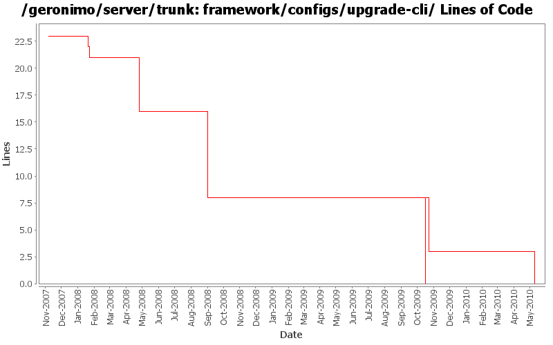

[root]/framework/configs/upgrade-cli
 src
(0 files, 0 lines)
src
(0 files, 0 lines)
 main
(0 files, 0 lines)
main
(0 files, 0 lines)
 history
(0 files, 0 lines)
history
(0 files, 0 lines)
 plan
(0 files, 0 lines)
plan
(0 files, 0 lines)

| Author | Changes | Lines of Code | Lines per Change |
|---|---|---|---|
| Totals | 20 (100.0%) | 24 (100.0%) | 1.2 |
| djencks | 9 (45.0%) | 16 (66.7%) | 1.7 |
| jdillon | 4 (20.0%) | 7 (29.2%) | 1.7 |
| kevan | 3 (15.0%) | 1 (4.2%) | 0.3 |
| jlaskowski | 2 (10.0%) | 0 (0.0%) | 0.0 |
| genspring | 1 (5.0%) | 0 (0.0%) | 0.0 |
| gawor | 1 (5.0%) | 0 (0.0%) | 0.0 |
GERONIMO-4583 Remove obsolete plugins from plugins group, we don't need to upgrade a 1.0 plan to 1.1 plan anymore.
0 lines of code changed in 1 file:
GERONIMO-5290 fix many of the deprecation warnings from maven 3
3 lines of code changed in 1 file:
bunch of logging improvements
0 lines of code changed in 1 file:
fix cglib dependency
2 lines of code changed in 1 file:
GERONIMO-4916 step 2 move sandbox osgi framework into trunk
8 lines of code changed in 1 file:
GERONIMO-4916 step 1 remove old framwork
0 lines of code changed in 3 files:
GERONIMO-4655 upgrade version to 3.0-SNAPSHOT, make a few things more consistent
1 lines of code changed in 1 file:
[maven-release-plugin] prepare branch 2.2
1 lines of code changed in 1 file:
GERONIMO-4239, sort of. Use transitive depenedencies in c-m-p everywhere. This may break stuff.... let me know
1 lines of code changed in 1 file:
(GERONIMO-3985) Use SLF4J as the primary logging facade for Geronimo
0 lines of code changed in 1 file:
Update LICENSE and NOTICE files. Merge from 2.1 branch
0 lines of code changed in 2 files:
upgrade trunk to 2.2-SNAPSHOT
1 lines of code changed in 1 file:
(GERONIMO-3747) Fixed parentage of module groups, though most still need to have their modules put into the proper groupId
Updated groupId of *everything* under framework/** to org.apache.geronimo.framework, and did my best to update all references
5 lines of code changed in 1 file:
(GERONIMO-3771) Moved maven-plugins/* to buildsupport/*, updated groupId to org.apache.geronimo.buildsupport
2 lines of code changed in 1 file:
Drop relativePath
0 lines of code changed in 1 file:
GERONIMO-3588 Upgrade XStream to 1.2.2
0 lines of code changed in 2 files: